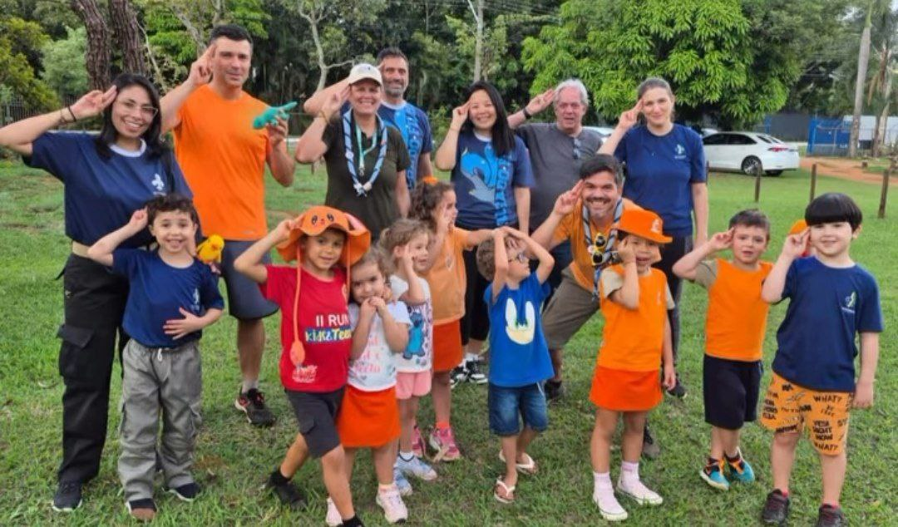
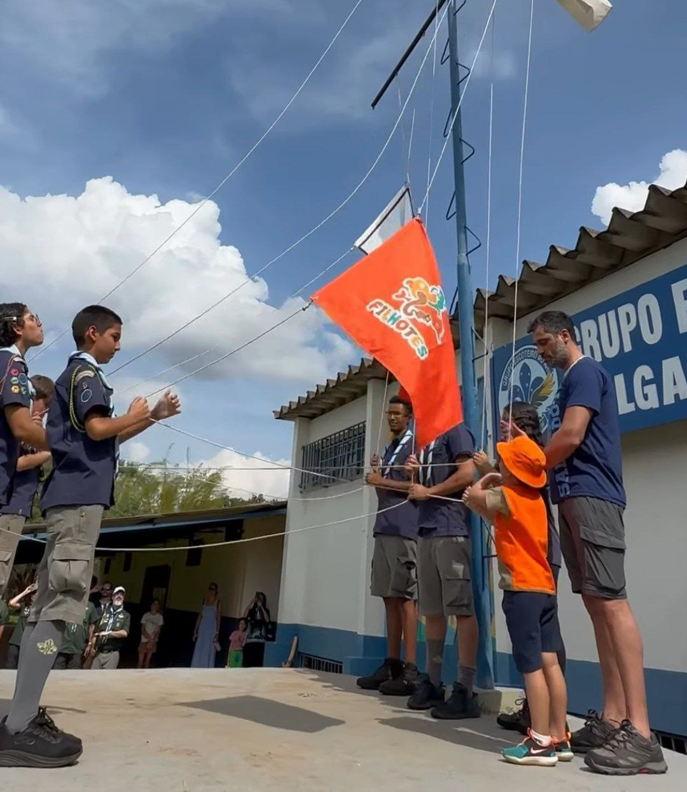

Filhotes
O Ramo Filhotes é a porta de entrada mais recente do Movimento Escoteiro, pensado para crianças pequenas descobrirem o mundo por meio de brincadeiras, experiências concretas e muito afeto.
- Aprender brincando, com atividades lúdicas, curtas e envolventes
- Participação obrigatória da família: a criança e o responsável formam a Ninhada
- Vivências seguras na sede, com foco em curiosidade, afeto, autonomia e descoberta
Saiba mais sobre o Ramo Filhotes
O Ramo Filhotes é voltado para crianças de 5 e 6 anos e coloca a descoberta do mundo no centro da experiência. Tudo é pensado a partir de brincadeiras, experiências concretas e vivências que despertam curiosidade, afeto e vontade de explorar.
Como é um ramo familiar, a participação do responsável é essencial. A criança e sua família formam a Ninhada, e as atividades acontecem em ambiente seguro, acolhedor e preparado para respeitar o ritmo dessa faixa etária.
Os escotistas planejam encontros curtos, dinâmicos e cheios de variação, sempre alinhados aos valores do Escotismo: respeito, amizade, responsabilidade, solidariedade e espiritualidade.